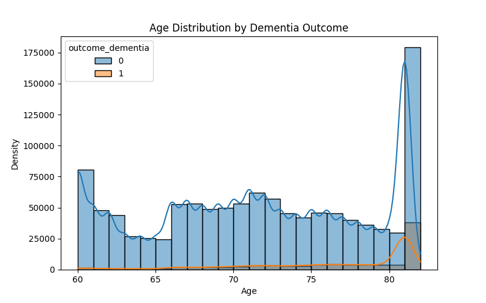
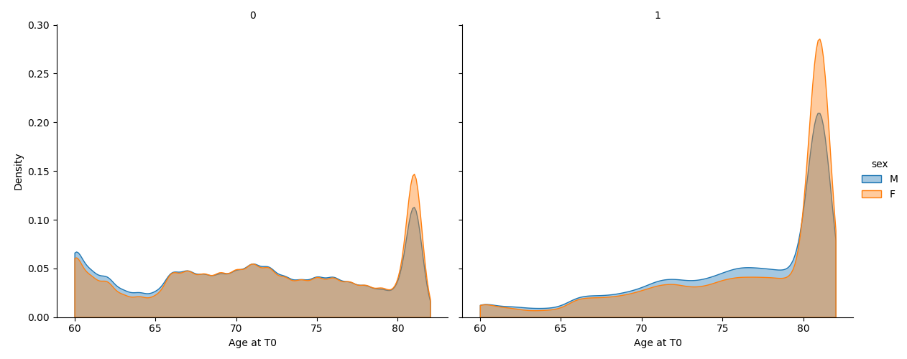

Cohort
The current cohort design ingests data from all eligible participants in the OHDSI database.
| Field | Detail |
|---|---|
| Type | Population-based cohort study |
| Data source | OMOP Common Data Model (OMOP CDM v5.3) |
| Schema | omop_cdm_53_pmtx_202203 |
| Data type | Claims-based |
| Approximate date range | January 2017 – June 2022 (~5.5 years) |
T0: First clinical visit (any type) on or after age 60, with 12 months of prior observation and 3 years of follow-up observation.
Lookback window: 12 months before T0. All predictor features are extracted in this timeframe.
Outcome window: 3 years after T0. Incident dementia diagnosis assessed within those 3 years.
Inclusion Criteria
| Criterion | Detail |
|---|---|
| Age at T0 ≥ 60 | Calculated as calendar year of T0 minus birth year |
| First clinical encounter | T0 = first visit (any type) on or after age 60 |
| 12 months observation before T0 | Any observation period covering [T0 − 12mo, T0] |
| 3 years observation after T0 | Any observation period extending to T0 + 3 years |
| No dementia before T0 | No dementia or impaired cognition code at or before T0 (incident dementia only) |
Outcome Definition
| Outcome | Definition |
|---|---|
| Incident dementia (1) | First dementia diagnosis occurring within [T0, T0 + 3 years] |
| Dementia-free (0) | No dementia diagnosis at any point through T0 + 3 years |
Dementia was defined using CONCEPT_ANCESTOR values from two top-level concepts:
- [4182210 — Dementia]
- [443432 — Impaired cognition] (included to capture ADRD-related diagnoses and prevent outcome leakage)
Cohort Size and Incidence
All eligible patients meeting inclusion criteria are included initially. Sex and age are retained as model features rather than matching variables.
Observed incidence: 90,682 cases out of 1,214,708 eligible patients (~7.5%).
Incidence > 5%: Controls are not downsampled using stratified random sampling to match the age and sex distribution of cases. [
Feature Set
All features extracted from the lookback window ([T0 − 12 months, T0]) only.
Demographics
| Feature | Type |
|---|---|
| Age at T0 | Continuous |
| Sex | Binary (M/F) |
Cardiometabolic
| Feature | Concept ID | Type |
|---|---|---|
| Essential hypertension | 320128 | Binary |
| Hyperlipidemia | 432867 | Binary |
| Type 2 diabetes mellitus | 201826 | Binary |
| Type 1 diabetes mellitus | 201254 | Binary |
Cerebrovascular
| Feature | Concept ID | Type |
|---|---|---|
| Transient cerebral ischemia (TIA) | 373503 | Binary |
| Cerebrovascular disease | 381591 | Binary |
| Cerebellar stroke syndrome | 4111711 | Binary |
| Brainstem stroke syndrome | 4111710 | Binary |
| Cerebral amyloid angiopathy | 4045749 | Binary |
Ophthalmic
| Feature | Concept ID | Type |
|---|---|---|
| AMD (dry or wet) | 372629, 376966 | Binary |
| Ocular hypertension | 381290 | Binary |
| Glaucoma | 437541 | Binary |
| Retinal vascular disorder | 434337 | Binary |
| Diabetic retinopathy | 45763583, 4255401, 4252356 | Binary |
Cohort Demographics
Looking at ages, there is relatively uniform distribution for age and age based on sex for patients without incident dementia, whereas the age of patients with dementia is left skewed. The older an individual, the higher the probability of incident dementia.

We can also compare that against Gender, there are generally more females in this cohort than males.

There is a spike for birth year 1937, which could be a clerical error or the default birth year that OHDSI assigned patients who's birth years were unknown